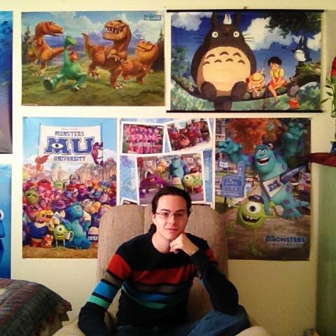

Contact Us
|  | Wes HarrisMy name is Wes Harris, I am an Undergraduate student pursuing a Bachelor's Degree in Computer Science and a Minor in Mathematics at New Mexico Institute of Mining and Technology. My interests include algorithm development and computer graphics (rendering, lighting, Global Illumination, caustics, simulations, and others). I am also interested in vector analysis and graph theory. My personal website is: www.markwesleyharris.com. I would love it if you checked it out! |
Stephanie GottMy name is Stephanie and I'm currently pursuing a Bachelor's degree in Computer Science with a minor in Mathematics. My interests include aerospace software engineering and machine learning. Find out more about mehere. |
|
 |
Kari EricksonMy name is Kari Erickson, I am an Undergraduate student pursuing a Bachelor's Degree in Computer Science with Minors in Mathematics as well as Electrical Engineering at New Mexico Institute of Mining and Technology. My interests include artificial intelligence, machine learning, collaboration software, linguistics, and computational linguistics. I am currently learning Japanese, Korean, and French. My Linked In account can be found here. |